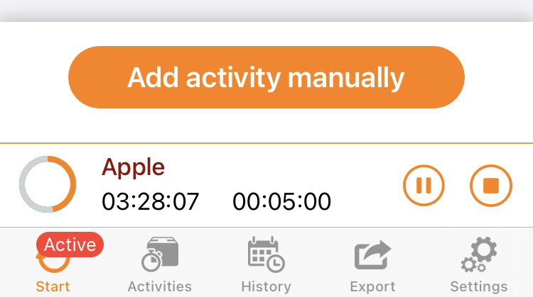

myWork - Tipps&Tricks
On this page you will find new tips and tricks in the future. It will help you to personalize myWork and provide background information on important features.
Stay tuned and look over again and again - It's worth it!
On this page you will find new tips and tricks in the future. It will help you to personalize myWork and provide background information on important features.
Stay tuned and look over again and again - It's worth it!
With the upcoming update (9.0), myWork will finally support the AppleWatch after a long development phase.
In addition to a new way to record your times, you also get an overview of your data directly on your wrist. And with the help of specialized complications, you can always keep an eye on your current working hours.
Since your data is still kept locally on your iPhone, you need two settings to sync it:
1. Install the myWork Companion app on your Apple Watch using the "Watch" app.
2.Within myWork, activate the "Apple Watch Support" in the settings.
After activation, you should see "Status: 2111" or "Status: 2110" in the settings. If these are not displayed, please check the connection to your Apple Watch and restart both devices once.
If you have any questions or suggestions for improvement, I would be very happy to receive an email.
With the upcoming update (8.0), five new working time models will be available in the settings of your jobs. Each with special features that will help you to record and evaluate your times even more accurately
This working time model is intended for all users who simply want to record their working time and earnings and do not have to follow any contractual requirements.
There are no target or overtime calculations.
This working time model was the basis of previous versions of myWork. It is intended for all employees who (according to their employment contract) have to fulfill a fixed weekly working time on a fixed number of working days.
The daily target hours and overtime are calculated based on the planned weekly hours divided by the number of working days.
Additional working days are directly stored as overtime.
This working time model allows you to store a specific target working time for each weekday. It is therefore ideal for (part-time) contracts with changing target hours.
The daily overtime is calculated directly from the target hours of the weekday.
In this model, you can also configure the "Hours when absent" accordingly.
This working time model is also based on weekly target hours. It is ideal for employees, students or freelancers who can work their target hours without fixed working days.
Overtime is calculated at the end of the previous week. A daily display is not possible.
This working time model is based on monthly target hours. Like the unspecific weekly hours, it is intended for employees, students or freelancers who can work their target hours without fixed working days.
Overtime is calculated at the end of the previous month. A daily display is not possible.
This model is used for budget-based planning without a time dependency. It is therefore particularly suitable for fixed-price projects and freelance work.
Overtime is calculated only after the total planned hours have been reached.
For this working time model, there is an additional new earnings model: "Fixed salary".
How you can check the calculation of your target and overtime hours, you will learn here.
The new view contains more information during active time recording. This includes the current working time and break time, the time you have to work today and the time of your expected end of work.
In addition to the automatic breaks, the entries that you have already recorded for today are also taken into account.
The orange circle visualizes your current working time in relation to your target hours.
As usual, you can adjust the start time or pause time directly by clicking on it.
If you swipe down in the view, you will get back to the start screen.
Using the mini tracker in the lower part of the screen you can pause or stop the current capture. If you click in another area, the enlarged view opens again.
The calculation of the current planned working time is currently still based on your planned weekly hours divided by the number of working days. This limitation will be fixed in the next update.
Using the board means of your iPhone/iPad, you can quickly and easily convert your exported file to PDF format.
To do this, simply press the Parts button in the preview after the export, select the "Print" action and then open the print preview as a pop-up with a long (or force) press.
The now generated PDF file, you can process as usual.
For each and every one of us, the COVID 19 pandemic is an unprecedented exceptional situation. This is particularly reflected in the current work situation.
With the help of the new "Short-time work" activity, this can now also be directly mapped in myWork. It reduces your planned working time according to the given period. It is important here that the entries are created on a daily basis and not in perspective for the next weeks.
The calculation of the short-time working allowance cannot be taken into account.
Here you can see an example how a possible entry can look like with a 50% short-time work and an actual 8h working day.
How you can copy a short-time work entry quickly and intelligently is described further below in the tip "Times-Tab".
Note: Short-time work is always an individual agreement between employee and employer. Please check beforehand if the above described way fits your situation.

The new iCloud synchronization is the easiest way to store all your data in one secure place and automatically manage it on all your devices.
Before you can start, please make sure that you have a stable and fast internet connection.
After you check the "iCloud Synchronization" box, all your data will be loaded into iCloud. This can take up to a few minutes depending on the amount of data and your internet connection.
Before your data is prepared for the iCloud, myWork creates a local backup file. You can easily access this file via iTunes if required.
Do not enable iCloud synchronization on your other devices until all data has been uploaded initially.
The activation on your second / third / ... device works in principle just as easily as on the first. However, you still have to decide what you want to do with your current data on this device(s). The following options are available to you
For technical reasons, this selection only appears during initial activation. Once your data has been migrated, iOS takes over the data management.
Of course the stopwatch also works via iCloud. You can start the recording on one device and then edit it on another.
As soon as you start or stop the stopwatch, your other devices will receive a corresponding message.
In order to avoid accidental double bookings, the confuguration of the automatic workstations was extended. You can now decide for each location (via the small check mark in the upper right corner) whether the current device should take it into account or not.
If you restore your data from a backup backed up in Dropbox or OneDrive while iCloud sync is active, your data previously stored in iCloud will also be overwritten by it. (This process may take a while).
If your data is not synchronized on the devices as expected, please check the following points
Unfortunately, myWork has no influence on when your data is loaded to or from the iCloud.
The calculation of your overtime can become quite complex over time.
For this reason there is an extra page which explains the calculation step by step based on your values. Just click on the small i-symbol.
Attention: In the working time model "Equal workiung days in week", myWork calculates your overtime based on calendar weeks, the planned target hours and the number of working days per week. If you started recording during the week (e.g. on Wednesday), there are probably days missing. Simply fill in these missing days with the activity "Unpaid placeholder" to correct the calculation.

With the new location-based automatic function, forgetting about time recording is a thing of the past!
Simply deposit your workstations for each job and you're done.
myWork does the rest for you!
A workplace is always a region within the defined radius. As soon as you enter or leave the region, myWork receives a message from your device and reacts to it.
Note: For technical reasons, the message will not be sent immediately. Depending on the device, it may take several minutes.

If you work on a larger company site or have to switch between different buildings during your working hours, you should choose a large radius accordingly. You can move freely within the radius during your entire working day without myWork stamping you out.
However, to record your working time as accurately as possible, you can use the correction sliders to define when the clock should actually start or stop running.
Your parking space is about 200m away from your workplace, as is the changing room. Place the pin in the center (keep your finger pressed on the map) and set the radius so that your working area is completely covered, here approx. 200m.
In addition, you enter approx. +2 min. at Start and approx. -3 min. at End via the correction sliders.
If you now enter the parking lot, myWork will notify you that your time recording will start in two minutes. If you leave the car park again after work, the three minutes will be deducted from the end date.

Now clearer and with more quick functions.
You can now easily edit your recorded working time in the tab "Activities" in just a few steps. Swipe to the right to book a time entry. You can recognize the successful booking by the green highlight below the job icon. Swiping to the left deletes the recorded time. The entry is then automatically removed from the overview. If you hold down an already recorded time for a long time, it duplicates itself and the date adjusts itself intelligently. For example, you can enter a "standard workday" without actively tracking it.
You will find the filter in the upper right corner. At initial opening, your active jobs are already preselected. You can tell by the orange border. All other (deactivated) jobs become visible when scrolling to the left. Additionally you have the option to choose between all, pending or booked activities within the selected job(s). The default always selects all activities.
The timeline allows you to customize the time period individually. When selecting the pre-defined periods ("This week", "Last week", etc.), the date and all associated entries are automatically adjusted.
A click on the arrow next to the filter symbol hides the filter area around it and creates space.
Your recorded Working time and the resulting Income in the area below the table are adjusted to the filter criteria you have selected.
Click the filter icon again to reset all filters.